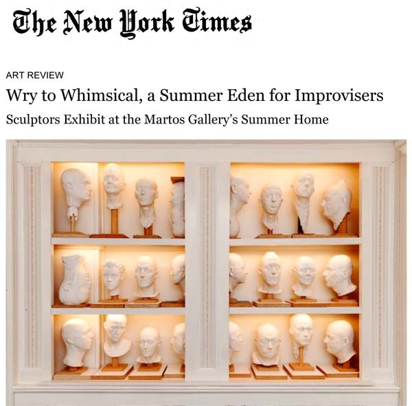

Barry X Ball’s “Collection of 24 Plaster Heads". Courtesy of the artist and Charles Benton/Sperone Westwater
By Karen Rosenberg
Published: July 18, 2013
The annual campground-casual show organized by the independent curator Bob Nickas in the
Bridgehampton summer home of Jose Martos, an art dealer, and Servane Mary, an artist, was always an odd fit for the fussy, privet-hedged Hamptons. Fortunately, this seasonal event (now in its fourth year) has found a more suitable home on the North Fork, in East Marion, where the couple purchased a late-19th-century Victorian with outbuildings on 10 acres. (The Bridgehampton farmhouse, dating from the 1860s, was sold last summer and — par for the course — has already been torn down.)
The new location, near the fishing hamlet of Orient, is a place where contemporary artists of all ages — not just the ones who show at megagalleries — actually live and work. (Many of the exhibition’s artists have homes in the area, as do
T. J. Wilcox, Barbara Bloom and Kelley Walker, or spend their summers there.) And it has a lot more outdoor space, some of it on the water, abutting the idyllic Dam Pond Maritime Reserve.
The property’s coordinates — “Lat. 41° 7’ N., Long. 72° 19’ W” — give the show its title, which feels about right for this improvisational integration of art, locale and lifestyle.
It begins with a sign posted along the driveway that looks to be the work of a local historical society but is actually by the artist Jason Metcalf. Mr. Metcalf blends reality and fiction in describing East Marion’s first known inhabitants, the Orient Focus People, providing details on an archaeological dig that may or may not have happened and leaving you with an image of “redheaded giants that ruled the area by defending it with their advanced weaponry and knowledge of war.”
The rest of the outdoor works, most of them site-specific and well camouflaged, form a kind of sub rosa sculpture park. Aaron Suggs’s “Untitled (Transparent Dinghy),” an almost invisible vessel made of clear acrylic, floats on the pond; nearby, G. William Webb‘s thin steel hoop frames the water view without calling much attention to itself. To the east, Wayne Gonzales’s painting “Waiting Crowd,” a sort of modern-day grisaille “Déjeuner sur l’Herbe,” rests on the ground in a shady copse.
In and around the trees on the lawn are a number of works that seem to have been made by industrious squirrels. Christopher Astley has wedged cubes of cast polyester resin into a crevice between trunks; Peter Coffin, also using brightly colored resin, has painted the tips of the branches on a dead tree. Jim Drain, meanwhile, has fashioned a sprawling mobile from an assortment of household items, including a beach chair frame, a clock, and a porcelain bell; at first sight, it looks disconcertingly like debris from a hurricane.
There are blink-and-you’ll-miss-it interventions like Adriana Lara’s rubber ball, pinned to a tree with an arrow, and Davina Semo’s small, puzzlelike arrangement of triangular concrete blocks on the grass. But there are also high-visibility outdoor paintings by, among others, Mr. Metcalf, Chris Martin and Jules de Balincourt. Mr. de Balincourt’s three cutout figures, planted in the grass, look a little like shooting targets, yet they’re spray-painted in Day-Glo colors and wave their arms in gestures of surrender.
Inside the house, the cluttered aesthetic of the Bridgehampton shows — or maybe of the house itself — has been supplanted by streamlined interiors and big statement pieces. Sometimes this means that the art-life balance is weighted in favor of art, as with the enormous John Miller sculpture that nearly fills the dining room with a scatological-looking dark brown blob.
On the second-floor landing, reached via Jim Lambie’s groovy stairway carpet of multicolored metallic vinyl, shelving supports a striking display of 24 plaster heads by Barry X Ball, all of them cast from life.
The faded floral wallpaper original to one bedroom makes an excellent backdrop for the batiklike patterns of a painting by Tamara Gonzales and the punchy silk-screens of Mr. Walker. And the clean white walls of another bedroom form a gallery for Dave Muller’s site-specific painting “W.W.S.R.D. (x7)” (the letters stand for “What Would Sun Ra Do?,” in homage to that Afro-Futurist musician.)
No space has been overlooked. A short, mesmerizing video of peas swirling in water by the photographer Wolfgang Tillmans plays in the garage; a grottolike glow-in-the-dark installation by Ms. Mary occupies the basement.
The room that best captures the vibe of these summer shows, however, belongs to the couple’s 3-year-old son. On a recent visit, the floor was strewn with building blocks, trucks and other toys, but the walls were covered with art, and the room’s empty closet had been papered with whimsical drawings and etchings of animals by Bill Adams. Above the bed, a do-it-yourself wall painting provided by Lily van der Stokker declares, “This Belongs to Me.”
Everything here seemed to say that this is the kind of house and the kind of summer destination — unlike the Hamptons — where kids can be kids, and artists can be artists.
“Lat. 41° 7’ N., Long. 72° 19’ W” runs through Sept. 2 at the Martos Gallery, 12395 Main Road, East Marion, N.Y.; (212) 560-0670, martosgallery.com.
To read the article online click here
For additional information please contact Taylor Trabulus at taylor@martosgallery.com or 212 560 0670
www.martosgallery.com
info@martosgallery.com
Like us on Facebook
Follow us on Twitter